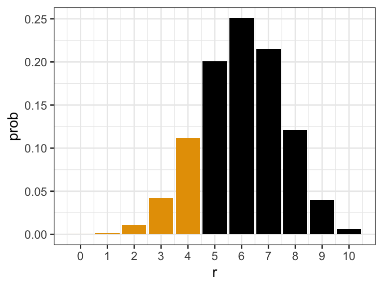
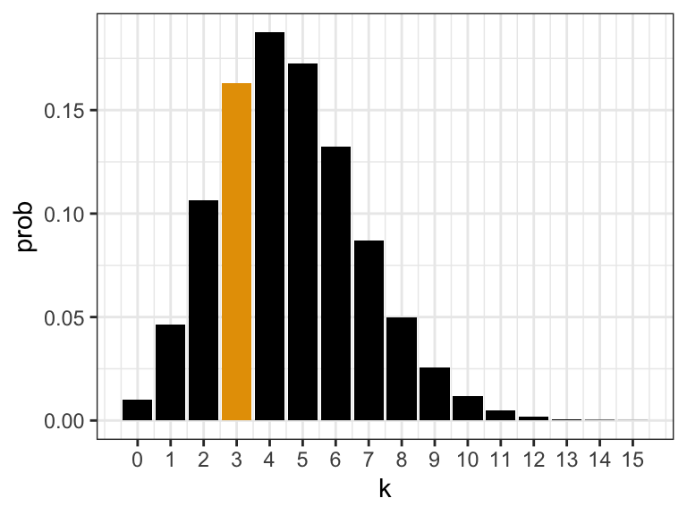
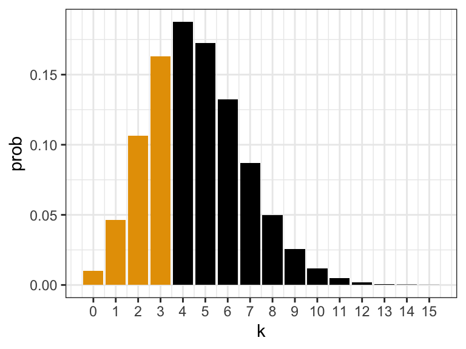

library(tidyverse)
pmf <- tibble(
r = 0:4,
pr = c(0.008, 0.076, 0.265, 0.411, 0.240)
)Chapter 4 Notes: Discrete Distributions
Discrete Random Variables
A random variable assigns numbers to outcomes in the sample space.
Example:
- Number of children with retinitis pigmentosa
- Number of individuals with leukemia
- etc…
Basically, an event that is a number.
Discrete random variable: Can count them (but may be infinite).
- Typically \(0, 1, 2, 3, \dots\)
Continuous random variable: Cannot count them.
- Typically some interval \((-\infty, \infty)\), \([0,1]\), etc.
Denote random variables with capital letters \(X, Y, Z\), etc.
Probability Mass Function (PMF)
Assigns a probability to a possible value \(r\). Denote this probability by \(P(X = r)\).
A PMF is a function of \(r\), not \(X\). \(X\) is used to denote the random variable.
Hypertensive Example: Let \(X =\) number of patients in a trial of 4 who have improved blood pressure.
- \(P(X = 0) = 0.008\)
- \(P(X = 1) = 0.076\)
- \(P(X = 2) = 0.265\)
- \(P(X = 3) = 0.411\)
- \(P(X = 4) = 0.240\)
\(0 \leq P(X = r) \leq 1\) for all \(r\)
\(\sum_r P(X = r) = 1\)
- Sum over all possible \(r\) is 1.
Expected Value or Mean
Measure of center of a PMF.
\[ E(X) = \sum_r r \cdot P(X = r) = \mu \] - Again, summing over all possible \(r\).
Hypertensive Example:
\[ E(X) = 0 \cdot 0.008 + 1 \cdot 0.076 + 2 \cdot 0.265 + 3 \cdot 0.411 + 4 \cdot 0.240 = 2.8 \]
Can be interpreted as the average value of \(X\) across many trials.
Note: \(\mu\) is a population parameter, not a statistic, which is a function of observed data.
Example: Across some trials, we might see:
\(x\) frequency 0 0 1 9 2 24 3 48 4 19 \[ \bar{X} = 0 \cdot 0 + 1 \cdot \frac{9}{100} + 2 \cdot \frac{24}{100} + 3 \cdot \frac{48}{100} + 4 \cdot \frac{19}{100} = 2.77 \]
Variance
Measure of spread.
\[ \text{Var}(X) = \sum_r (r - \mu)^2 \, P(X = r) = \sigma^2 \]
\(SD(X) = \sqrt{\sigma^2} = \sigma\)
Note: \(\text{Var}(X) = E(X^2) - E(X)^2 = \sum_r r^2 \, P(X = r) - \left(\sum_r r \, P(X = r)\right)^2\)
Larger \(\sigma\) means more variable.
Cumulative Distribution Function (CDF)
\[ F(x) = P(X \leq x) = \text{Probability } X \text{ is less than or equal to } x \]
Example: Hypergeometric distribution
- \(F(0) = 0.008\)
- \(F(1) = 0.008 + 0.076\)
- \(F(2) = 0.008 + 0.076 + 0.265\)
- \(F(3) = 0.008 + 0.076 + 0.265 + 0.411\)
- \(F(4) = 0.008 + 0.076 + 0.265 + 0.411 + 0.240\)
Useful for probability calculation:
\[ P(1 \leq X \leq 3) = P(X \leq 3) - P(X \leq 0) \]
\(X =\) number of boys in a family of 4
| \(r\) | \(P(X = r)\) |
|---|---|
| 0 | \(\frac{1}{16}\) |
| 1 | \(\frac{1}{4}\) |
| 2 | \(\frac{3}{8}\) |
| 3 | \(\frac{1}{4}\) |
| 4 | \(\frac{1}{16}\) |
Calculate \(E(X)\), \(SD(X)\), \(F(X)\)
- \(E[X] = 0 \cdot \frac{1}{16} + 1 \cdot \frac{1}{4} + 2 \cdot \frac{3}{8} + 3 \cdot \frac{1}{4} + 4 \cdot \frac{1}{16} = 2\)
- \(E[X^2] = 0^2 \cdot \frac{1}{16} + 1^2 \cdot \frac{1}{4} + 2^2 \cdot \frac{3}{8} + 3^2 \cdot \frac{1}{4} + 4^2 \cdot \frac{1}{16} = 5\)
- \(Var(X) = E[X^2] - E[X]^2 = 5 - 2^2 = 1\)
- \(SD(X) = \sqrt{Var(X)} = \sqrt{1} = 1\)
- CDF:
- \(F(0) = \frac{1}{16}\)
- \(F(1) = \frac{1}{16} + \frac{1}{4}\)
- \(F(2) = \frac{1}{16} + \frac{1}{4} + \frac{3}{8}\)
- \(F(3) = \frac{1}{16} + \frac{1}{4} + \frac{3}{8} + \frac{1}{4}\)
- \(F(4) = \frac{1}{16} + \frac{1}{4} + \frac{3}{8} + \frac{1}{4} + \frac{1}{16}\)
Some distributions are seen in real data over and over again:
- Binomial: count out of \(n\)
- Poisson: count during some time interval, or count in some area of space.
These have specific PDFs/CDFs.
We need to know about permutations/combinations to understand them.
Number of permutations of \(n\) things taken \(k\) times:
\[ {}_nP_k = n(n-1)(n-2) \dots (n-k+1) = \frac{n!}{(n-k)!} \]
Example: Individuals \(= A, B, C, D\)
\[ {}_4P_2 = \frac{4!}{2!} = \frac{4 \cdot 3}{1} = 12 \]
Possible permutations:
- \(A, B\)
- \(A, C\)
- \(A, D\)
- \(B, A\)
- \(B, C\)
- \(B, D\)
- \(C, A\)
- \(C, B\)
- \(C, D\)
- \(D, A\)
- \(D, B\)
- \(D, C\)
\({}_4P_3\) Example:
- Tree diagram shows all possible arrangements of \(A, B, C, D\) taken 3 at a time:
What if order does not matter? For example, \(\{A, B, C\} = \{C, B, A\}\).
The number of combinations of \(n\) things taken \(k\) at a time:
\[ {}_nC_k = \binom{n}{k} = \frac{n!}{k!(n-k)!} \]
There are \(\frac{n!}{(n-k)!}\) permutations of size \(k\).
Each of those shares elements with \(k! = k P_k\).
Example: \(A, B, C, D \quad {}_4C_3\)
- Possible combinations:
- \(A, B, C = A, C, B = B, A, C = B, C, A = C, A, B = C, B, A = 3!\)
- Possible combinations:
Divide by \(k!\) to get the number of combinations.
Provided Distributions in R
If given a probability mass function, can create a data frame of it
We can verify that the PMF sums to 1
sum(pmf$pr)[1] 1We can calculate the mean and variance like so
mu <- sum(pmf$r * pmf$pr)
mu[1] 2.799sigma2 <- sum((pmf$r - mu)^2 * pmf$pr)
sigma2[1] 0.8406You can get the CDF via cumsum()
pmf |>
mutate(cdf = cumsum(pr))# A tibble: 5 × 3
r pr cdf
<int> <dbl> <dbl>
1 0 0.008 0.008
2 1 0.076 0.084
3 2 0.265 0.349
4 3 0.411 0.76
5 4 0.24 1 We can plot it
ggplot(pmf, aes(x = r, y = pr)) +
geom_col(fill = "black")Binomial Distribution
- \(n\) trials
- Outcome of each trial is “success” or “failure”
- \(P(\text{success}) = p\) for each trial
- Trials are independent
Let \(X =\) number of successes
Then \(X \sim \text{Bin}(n, p)\) (Distributed as Binomial)
Example: White blood count
Let \(X =\) number of neutrophils out of 100 white blood cells
\(P(\text{neutrophile}) = 0.6\)
\(\Rightarrow X \sim \text{Bin}(100, 0.6)\)
If \(X \sim \text{Bin}(n, p)\) then
\[ P(X = r) = \binom{n}{r} p^r (1 - p)^{n - r} \]
Example: Suppose \(X \sim \text{Bin}(3, 0.3)\)
\(P(X = 2) = P(\text{2 successes and 1 failure})\)
\(P(SSF) = P(SF S) = P(F SS) = p^2 (1 - p)\)
So \(P(X = 2) = 3 \, p^2 (1 - p) = \binom{3}{2} p^2 (1 - p)\)
Claim: # of ways to order \(r\) successes and \(n - r\) failures is \(\binom{n}{r}\)
- Proof: Consider positions \(1, 2, \dots, n\). Now choose \(r\) out of these to be \(S\), the rest are \(F\)
Example: \(X =\) number of boys out of 5 children, \(p = 0.51\)
- \(P(X = 2) = \binom{5}{2} (0.51)^2 (0.49)^3 = 0.306\)
\[ \binom{5}{2} = \frac{5 \cdot 4}{2 \cdot 1} = 10 \]
CDF:
\[ P(X \leq x) = \sum_{r=0}^{x} P(X = r) = \sum_{r=0}^{x} \binom{n}{r} p^r (1 - p)^{n - r} \]
- No simpler form.
Mean:
\[ E(X) = \sum_{r=0}^{n} r \binom{n}{r} p^r (1 - p)^{n - r} = n \, p \]
- Expected number of successes \(=\) number of trials \(\times P(\text{success})\)
Variance:
\[ \text{Var}(X) = n \, p (1 - p) \]
\(n \uparrow \Rightarrow \text{Var} \uparrow\)
Variance is highest at \(p = 0.5\), smallest at \(p = 0\) or \(1\).
Binomial Distribution in R
The PMF is
dbinom().About 60% of all white blood cells are neutrophils. If we observe 10 white blood cells, the probability of seeing 4 neutrophils is
\[ \binom{10}{4} 0.6^4 0.4^6 \]
dbinom(x = 4, size = 10, prob = 0.6)[1] 0.1115The CDF is
pbinom():The probability of seeing 4 or fewer neutrophiles out of 10 white blood cells is
\[ Pr(X \leq x) = \sum_{r=0}^x\binom{10}{r} 0.6^r 0.4^{n-r} \]
pbinom(q = 4, size = 10, prob = 0.6)[1] 0.1662
The quantile function is
qbinom().\[ f(p) = \min(x) \text{ such that } p \leq Pr(X \leq x) \]
E.g., the quantile function applied at 0.55 is 6
qbinom(p = 0.55, size = 10, prob = 0.6)[1] 6because the CDF at 6 is above 0.55 and the CDF at 5 is below 0.55.
pbinom(q = 5, size = 10, prob = 0.6)[1] 0.3669pbinom(q = 6, size = 10, prob = 0.6)[1] 0.6177You generate random samples from the binomial distribution with
rbinom()x <- rbinom(n = 100, size = 10, prob = 0.6)x <- rbinom(n = 10000, size = 10, prob = 0.6)
The underlying incidence rate of chronic bronchitis in the first year of life is 0.05. What is the probability of obtaining at least 75 cases of chronic bronchitis in the first year of life among 1500 families?
1 - pbinom(q = 74, size = 1500, prob = 0.05)[1] 0.5165or
pbinom(q = 74, size = 1500, prob = 0.05, lower.tail = FALSE)[1] 0.5165Suppose a group of 100 women ages 60–64 received a new flu vaccine in 2004, and 5 of them died within the next year. Is this event unusual? According to life tables, the probability of death for this age group in the next year is 0.009. Calculate the probability that five or more such women would die under normal circumstances if the flu vaccine had no effect.
What is the expected number of such women (out of 100) that we would expect to die in the next year?
1 - stats::pbinom(q = 4, size = 100, prob = 0.009)[1] 0.002191Yes, very unusual.
100 * 0.009 = 0.9. So about 1 woman out of 100.
Poisson Distribution
Counts of rare events over some period of time or space.
Example: # of typhoid cases in a year.
Example: # of bacterial colonies on an agar plate.
Assume:
- For small time interval \(\Delta t\), \(P(\text{success in } \Delta t)\) is about \(\lambda \Delta t\) (for some \(\lambda\)).
- \(P(\text{more than 2 successes in } \Delta t) \approx 0\)
- Stationarity: \(P(\text{success})\) about the same for all time intervals.
- Independence: One success has no bearing on any other success.
- Violated, e.g., in epidemics.
Then \(X =\) number of “successes” in time \(t\)
- \(X \sim \text{Pois}(\mu)\) such that \(\mu = \lambda t\)
\[ P(X = k) = \frac{e^{-\mu} \, \mu^k}{k!} \]
\(\lambda\) is the rate. The number of counts per unit time/area.
\(\mu\) is the mean. The expected number of counts in the given unit of time/area.
Note:
- If \(X \sim \text{Pois}(\mu)\) over time \(t\) then \(X \sim \text{Pois}(c \mu)\) over time \(ct\).
Example:
\(X =\) number of typhoid deaths in 1 year
\(X \sim \text{Pois}(4.6)\)
Let \(Y =\) number of typhoid deaths in half a year
\(Y \sim \text{Pois}\left(\frac{4.6}{2}\right) = \text{Pois}(2.3)\)
Example:
\(X =\) number of bacteria colonies in 100 cm²
\(X \sim \text{Pois}(2)\)
\(Y =\) number of bacteria colonies in 1000 cm²
\(Y \sim \text{Pois}(20)\)
Mean: If \(X \sim \text{Pois}(\mu)\), \(E(X) = \mu\)
Variance: \(\text{Var}(X) = \mu\)
If \(X \sim \text{Pois}(\lambda_1)\) and \(Y \sim \text{Pois}(\lambda_2)\) (and are independent), then \(X + Y \sim \text{Pois}(\lambda_1 + \lambda_2)\)
- Not generally true for other distributions (e.g., not for binomial).
Relation to Binomial:
- If \(X \sim \text{Bin}(n, p)\)
- \(n\) large \((> 100)\)
- \(p\) small \((< 0.01)\)
- \(np\) intermediate
- Then \(X \approx \text{Pois}(np)\)
- (Approximate)
- If \(X \sim \text{Bin}(n, p)\)
This is used to justify Poisson in cases where we know \(n\) is large, but we don’t know it exactly.
Example: \(X =\) number of RNA molecules of a gene observed (on the order of 100)
- We don’t know \(n\) but know it’s large.
- We don’t know \(p\) but we know it’s small (because \(X \approx 100\)).
- Use Poisson to model \(X\)!
Poisson Distribution in R
The PMF is
dpois().Number of deaths from typhoid-fever is over a 1-year period approximately Poisson with rate \(\lambda = 4.6\). The probability of exactly 3 deaths is
\[ e^{-4.6}\frac{4.6^3}{3!} \]
dpois(x = 3, lambda = 4.6)[1] 0.1631
The CDF is
ppois():\[ Pr(X \leq x) = \sum_{k=0}^{x}e^{-4.6}\frac{4.6^k}{k!} \]
ppois(q = 3, lambda = 4.6)[1] 0.3257
The quantile function is
qpois().\[ f(p) = \min(x) \text{ such that } p \leq Pr(X \leq x) \]
E.g., the quantile function applied at 0.55 is 5
qpois(p = 0.55, lambda = 4.6)[1] 5because the CDF at 5 is above 0.55 and the CDF at 4 is below 0.55.
ppois(q = 4, lambda = 4.6)[1] 0.5132ppois(q = 5, lambda = 4.6)[1] 0.6858You generate random samples from the poisson distribution with
rpois()x <- rpois(n = 100, lambda = 4.6)x <- rpois(n = 10000, lambda = 4.6)
Poisson Approximation to Binomial
For \(n\) large, \(p\) small, and \(np\) intermediate, we have that if \(X \sim Binom(n, p)\) then we also have approximately that \(X \sim Pois(np)\).
Rule of thumb: \(n \geq 100\) and \(p \leq 0.01\)
Example:
n <- 100 p <- 0.01 tibble( Binom = dbinom(x = 0:5, size = n, prob = p), Pois = dpois(x = 0:5, lambda = n * p) )Binom Pois 0.37 0.37 0.37 0.37 0.18 0.18 0.06 0.06 0.01 0.02 0.00 0.00 You don’t use this anymore to actually calculate binomial probabilities, since computers do that efficiently without resorting to an approximation.
This is mostly useful in cases to justify using the Poisson.
E.g., we see monthly number of cases of Guillain-Barré syndrome in Finland
- April 1984: 3
- May 1984: 7
- June 1984: 0
- July 1984: 3
- August 1984: 4
- September 1984: 4
- October 1984: 2
The distribution of the number of cases during a month is likely well approximated by a binomial, with \(n\) equaling the population of Finland. But we don’t know \(n\), so we can use a Poisson distribution to model these counts.
Exercises (4.24–4.29)
Assume the number of episodes per year of otitis media, a common disease of the middle ear in early childhood, follows a Poisson distribution with parameter \(\lambda\) = 1.6 episodes per year.
Find the probability of getting 3 or more episodes of otitis media in the first 2 years of life.
If the rate is 1.6 episodes per year, what is the rate for every two years?
Use the CDF of the Poisson distribution.
The rate is 1.6 per year (on average). So in two years the rate is 3.2 per year (on average). Thus,
\(X =\) # in 2 years \(\sim \text{Pois}(1.6 * 2) = \text{Pois}(3.2)\)
1- ppois(2, lambda = 3.2)[1] 0.6201Find the probability of not getting any episodes of otitis media in the first year of life.
Use the PMF of the Poisson distribution.
Let $X = $ # in first year \(\sim \text{Pois}(1.6)\). Then we want \(P(X = 0)\).
dpois(x = 0, lambda = 1.6)[1] 0.2019An interesting question in pediatrics is whether the tendency for children to have many episodes of otitis media is inherited in a family.
What is the probability that 2 siblings will both have 3 or more episodes of otitis media in the first 2 years of life?
Use the probability from question 4.24 as a starting point. Assume independence between siblings.
We will assume the siblings are independent. Then this probability is equal to
\[\begin{align} &P(\text{Sib 1 has } 2 \text{ or more}) \times P(\text{Sib 2 has } 2 \text{ or more})\\ &= 0.6201 \times 0.6201 = 0.3845, \end{align}\] where the probability of two or more episodes was calculated in Exercise 4.24.
What is the probability that exactly 1 sibling will have 3 or more episodes in the first 2 years of life?
Use the Binomial distribution with the probability from 4.24.
Let $Y = $ # of siblings who have 3 or more episodes in the first 2 years of life. Then
\[ Y \sim \text{Bin}(2, 0.6201) \]
We want the probability that \(Y=1\), which we can get by dbinom()
dbinom(x = 1, size = 2, prob = 0.6201)[1] 0.4712Equivalently, you can think of this as the probability that the first sibling has three or more and the second does not, plus the probability that the first does not and the second does.
\[ 0.6201 \cdot (1 - 0.6201) + (1 - 0.6201) \cdot 0.6201 = 0.4712 \]
What is the probability that neither sibling will have 3 or more episodes in the first 2 years of life?
You can either use the binomial distribution as in 4.27, or you can (equivalently) just use the complement rule and independence.
Using the same \(Y\) as Exercise 4.27, we want \(P(Y = 0)\)
dbinom(x = 0, size = 2, prob = 0.6201)[1] 0.1443We can equivalently get this by multiplying the probability that sib1 and sib2 will not have 3 or more episodes.
\[ (1 - 0.6201)(1 - 0.6201) = 0.1443 \]
What is the expected number of siblings in a 2-sibling family who will have 3 or more episodes in the first 2 years of life?
Use the equation for the expected value of the binomial distribution. Or, you can use the definition of expectation directly with the probabilities you calculated in Parts 4.26, 4.27, and 4.28.
Using the same \(Y\) as Exercise 4.27, we want \(E[Y]\). Using the results of the binomial distribution, this is just \[ E(Y) = 2 \cdot 0.6201 = 1.24 \]